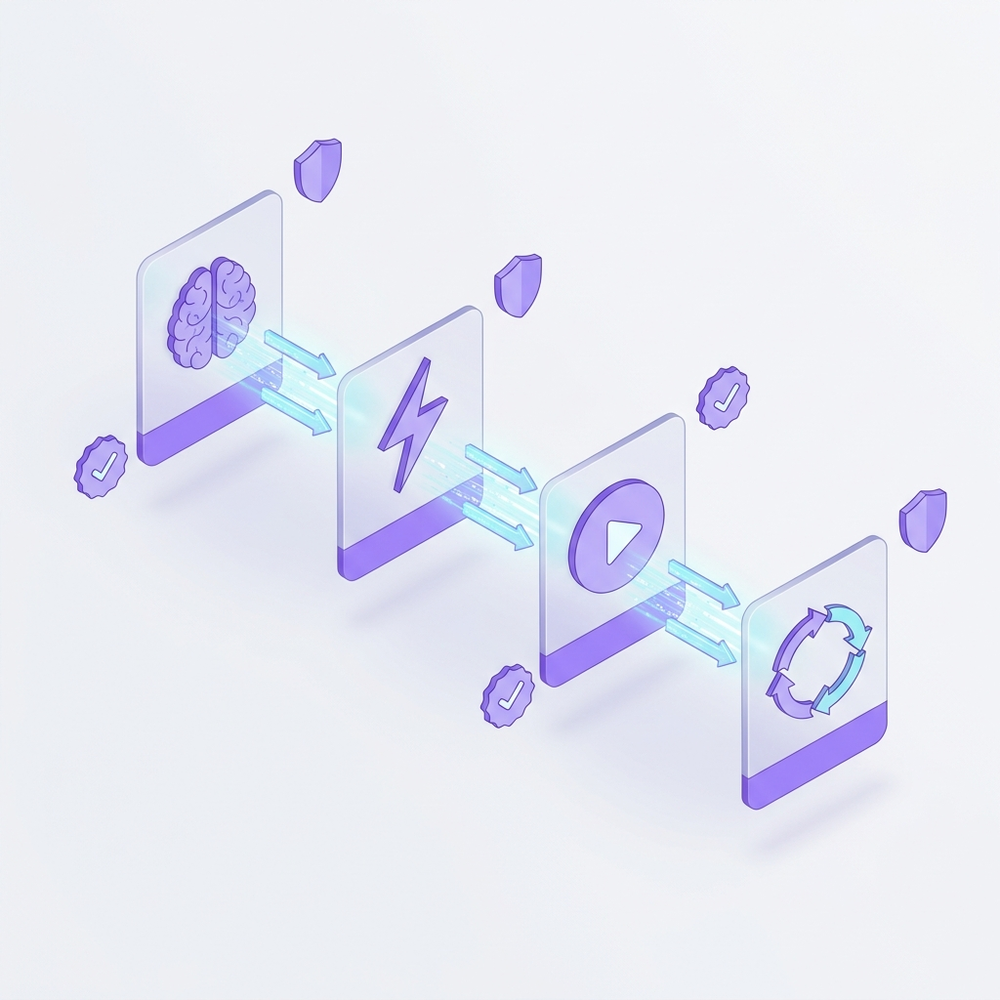

Meet Jean-Pierre & Michelle.
AI That Actually Works.¶
Two purpose-built AI copilots that automate project reporting and analytics intelligence.
They connect to your tools, learn your domain, validate every answer, and compound intelligence daily.
100% on your machine. Zero cloud. Part of the AIFlow ecosystem.
What They Automate For You¶
🎩 Jean-Pierre
Project Reporting Automation
Connects to GitHub, Jira, and Slack — turns chaotic project data into a real-time command center with proactive risk scoring and 24/7 background monitoring.
🔬 Michelle
Analytics Intelligence
Connects to your databases — anyone can ask data questions in plain English with verified, source-cited answers backed by a 9-layer anti-hallucination architecture.
See the Results¶


Project Reporting Automation
From chaotic project data → real-time command center with proactive risk scoring, fleet intelligence, and executive-ready reports.
Analytics Intelligence
From ad-hoc SQL requests → self-service analytics with verified answers, interactive dashboards, and automated KPI tracking.
Part of the AIFlow Ecosystem¶
AgentOS + AIFlow = Complete Intelligence
AgentOS agents are the local compute nodes — running on your machine, ensuring data sovereignty and low-latency processing. AIFlow is the centralized brain that sees your entire portfolio. Together, they form the hub-and-spoke intelligence architecture.
Explore AIFlow Platform →Why They Don't Hallucinate¶
They Evolve
Generic AI resets every session. These agents get measurably smarter every week.
They Validate
Every answer comes with proof — exact SQL, source tables, execution evidence.
They Stay Private
100% on your machine. Nothing — not data, not queries, not memory — leaves.
9 Layers of Anti-Hallucination¶

Text-to-SQL tools generate queries. Michelle generates queries, validates them, learns from corrections, shares knowledge across your team, and gets measurably more accurate every day.
Not Another Chatbot. An Intelligence Engine.¶
Claude is brilliant at conversation. But conversation isn't operations, and "generating SQL" isn't analytics you can trust. We built an entire ecosystem — self-reflection, evolving memory, federated knowledge, business context enforcement, provenance tracking, anomaly detection, auto-corrections, integrated reporting — to make our agents provably trustworthy.
| Capability | Claude / ChatGPT + MCP | Jean-Pierre & Michelle |
|---|---|---|
| Schema knowledge | ⚠️ MCP can fetch — no tiered caching | ✅ Auto-synced with adaptive tiered injection |
| Persistent memory | ❌ Session resets — SKILLS.md is static | ✅ 6-namespace Evolution Memory |
| Query validation | ❌ You validate manually | ✅ Triage → Generate → Execute → Learn |
| KPI tracking | ❌ No persistence, schedules, thresholds | ✅ KPI engine with cron, history, alerts |
| Team knowledge | ❌ Each user starts from zero | ✅ GitHub-backed Shared Brain + PR review |
| Data sovereignty | ❌ Data goes to Anthropic / OpenAI | ✅ Local binary, air-gap capable |
| Interactive dashboards | ❌ Text + static artifacts | ✅ Charts, pins, KPI gauges, drill-downs |
| Proactive monitoring | ❌ Reactive — you ask, it answers | ✅ Background daemon with risk scoring |
| Business glossary | ⚠️ Static SKILLS.md — no enforcement | ✅ Dynamic glossary + rules, enforced per query |
| Improves over time | ❌ Same accuracy week 1 and week 52 | ✅ Measurably smarter every week |
The Bottom Line
Claude is a brilliant conversationalist. But can you stake your board deck on it? Jean-Pierre and Michelle are purpose-built operational systems — they live on your machine, prove every claim with transparent action chains, learn from every correction, share knowledge across your team, and get measurably more accurate every week. One is a tool. The other is an intelligence system you can trust.
The Time You're Losing Today¶
Every week, your team loses 25+ hours to manual reporting, ad-hoc data requests, and knowledge gaps. Here's where the time goes.
PMs: 45 min of chaos every morning¶
Open Jira → Slack → GitHub → Spreadsheet. Context-switching just to answer "where do things stand?" — and the data is already stale.
Data teams: buried in lookups¶
15+ ad-hoc SQL requests/week, each 30-60 min. That's 1-2 analysts doing glorified lookups instead of real analysis.
Knowledge walks out the door¶
Your best analyst leaves → metric definitions, query patterns, business context: all gone. New hires spend 3 weeks just learning what "active customer" means.
AI chatbots hallucinate numbers¶
You tried ChatGPT / Claude for analytics. It invents data, forgets corrections next session, and every team member starts from zero. The issue isn't AI. It's stateless AI.
The Time You Get Back¶
Side-by-side: what your team does manually today vs. what the agents automate.
How the Founding Member Program Works¶
Zero risk. We automate one workflow in 2-3 weeks — you measure the results. Founding Members get priority onboarding, direct access, and shape the product roadmap.
Pick One Workflow
Which reporting workflow wastes the most time? Weekly status? Ad-hoc data requests? Executive reports? We start with the one that hurts most.
We Automate It
In 2-3 weeks, we deploy the agent on your machine, connect it to your tools, configure your Shared Brain, and automate the workflow end-to-end.
You Measure Results
No cost. No commitment. You measure real time saved, accuracy scores, and evolution learning rate. If it works — we expand. If not — zero money wasted.
Your Data Stays on Your Machine¶
Built For Your Role¶
CTOs & VP Engineering
Portfolio risk visibility → proactive decisions, not fire drills
Engineering Managers
Automate status gathering → real-time project health
Data & Analytics Leaders
Eliminate ad-hoc request backlog → self-service in 3 sec
Technical PMs
3 report variants → one click, CTO/CFO/PMO in seconds
Become a Founding Member¶
We pick ONE workflow — the one that wastes the most time — and automate it in 2-3 weeks. You see a real, working result before spending anything. As a Founding Member, you get direct access to the team, priority support, and influence on the product roadmap.
📧 info@unicolab.ai · 💬 DM us on LinkedIn · 🌐 ai-flow.ai
For Technical Teams: The Platform
AgentOS — Composable AI Copilots¶
AgentOS is a LEGO-like platform for building and deploying specialized AI copilots. A battle-tested engine handles the hard parts — streaming AI orchestration, adaptive memory, tool execution, and real-time dashboards — while domain-specific packs configure each copilot for a particular role.
Think of it as: Engine (shared) + Pack (specialized) = Copilot ready in days, not months.
Available Copilots:
| Copilot | Persona | Domain | Status |
|---|---|---|---|
| 🎩 Jean-Pierre | AI PM Copilot | Project Management | ✅ Production |
| 📊 Michelle | Analytics Intelligence | Data & BI | ✅ Production |
| 🥐 Édith | Sales Intelligence | CRM & Pipeline | ✅ Available |
| 💼 Yvette | Freelancer PM | Independent Consulting | ✅ Available |
| 🏢 Office | Productivity | Document & Workflow | ✅ Available |
| 🛒 Retail Ops | Operations | Inventory & Analytics | ✅ Available |
AI Providers:
| Provider | Type | Cost |
|---|---|---|
| Ollama | 100% local | Free |
| OpenAI | Cloud API | Per-token |
| Anthropic | Cloud API | Per-token |
| Google Gemini | Cloud API | Per-token |
Key: Pre-compiled binary · Runs on macOS, Linux, Windows · Single-command install · Air-gap ready with Ollama
Quick Install:
Built with ❤️ by UnicoLab
Part of the AIFlow ecosystem · AI automation consulting — Paris, France
© 2024–2026 UnicoLab. All rights reserved.